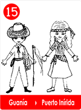
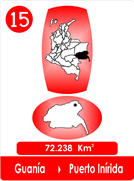
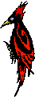
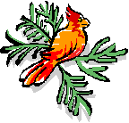
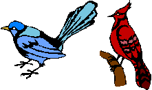
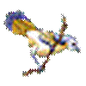
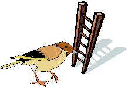
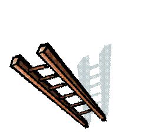
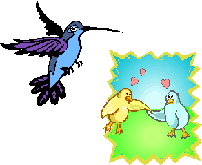
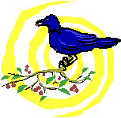

15 El Regalo De Las Alas "Guainía"
- Consulta a Jesús
- Fábulas de Colombia
- Metodo Corima
- Arbol
- Flor
- Fruto
- Estrellas Pequeñas
- Nostradamus
- La Ruta del Sol
- Fabula de Corima
- Productos y Servicios
- Mensajeros Celestiales
- Juguemos
- Articulos
- Estrellas Humanas
- Herramientas
- Plantas Milagrosas
- Adorables Fechas
- Videos


Hace muchos años, cuando Dios creó la tierra, creo muchos y hermosos pajaritos, para que con sus trinos y bellas plumas adornaran la tierra.
  
Pero cuentan que ocurrió un problema, los pajaritos sabían hacer sus nidos, pero se lamentaban por no tener garras, ni dientes, ni grandes fauces que los defendieran de los animales gigantes que los rodeaban, que con solo tocarlos, acaban con ellos.
Entonces se reunieron en una bella selva para decidir lo que debían hacer. Como sabían hacer nidos, con palitos y hojas, decidieron hacer una escalera entre todos y llegar al cielo, para hablar con el creador y contarle el problema, hicieron escalón por escalón hasta lograr la escalera.

Al terminarla, le dieron una serenata al Creador, y descrestaron a todos en el Cielo.
El canario amarillo tomo la palabra y dijo:
Señor, Señor, los pajaritos de la tierra queremos agradecerte por la belleza de nuestras plumas, las bellas voces y nuestra existencia, pero queremos exponerte que estamos indefensos ante las demás criaturas, nos superan con sus garras, fauces y enormes garras, no tenemos como defendernos de ellos y nos están acabando.
El Creador los miró con mucho amor y les dijo:"Vuelvan a la tierra, les voy a regalar una forma diferente que les permita defenderse."
Los pajaritos y las demás aves, saludaron a su Creador y comenzaron a bajar por la escalera. En los primeros peldaños se dieron cuenta que se les aumentaban las plumas en los lados y a todos les salían alas al moverlas.  
Las aves comenzaron a volar! Y todas las aves se sintieron felices.